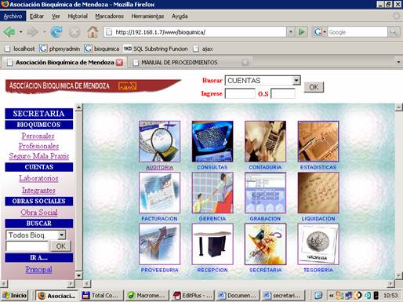
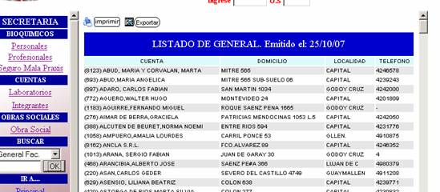
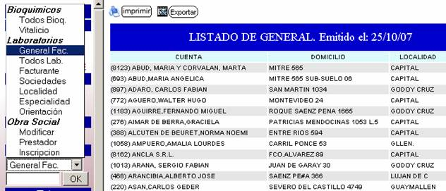

SECRETARIA
En el índice de Secretaria encontramos Alta de Bioquímicos, comprende todos los datos relacionados a un bioquímico este o no asociado a la entidad, estos incluyen además los datos profesionales y el seguro de Mala Praxis.
En el sector de Cuentas: Se realizarán Altas de las cuentas activándose en la asociación.
En el link Integrantes se darán de alta todos aquellos bioquímicos que abran una cuenta en sociedad, es importante estos datos porque serán tenidos en cuenta a la hora de retención de impositiva.
En el sector de Obra Social: Se realizarán Altas de las obra sociales. (Convenio aparte – Ver Convenio).
Buscadores por: (según necesidad de informar) En el menú desplegable se selecciona el tipo de búsqueda y en la caja de texto vacía se ingresa el código de bioquímico o código de cuenta según el caso lo requiera. Todos estos son visualizados por pantalla
En el menú desplegable siguiente encontramos planillas para imprimir. Seleccionamos tipo de planilla y luego apretamos el botón de IMPRIMIR
Para eliminar, modificar o ver alguna cuenta, bioquímico u obra social. Seleccionamos en el buscador el código y/o nombre a buscar y nos aparecerá la siguiente respuesta.
 Seleccionamos
según la necesidad
Seleccionamos
según la necesidad
Modificar: Modifica un registro.
Eliminar: Borra un registro.
Ficha: Nos devuelve una ficha con los datos requeridos.
También encontramos un sector para Imprimir Planillas o Exportar

Distintas Planillas para Visualizar, imprimir o Exportar

g